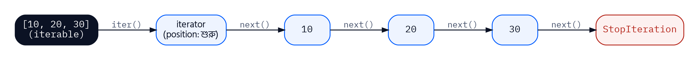
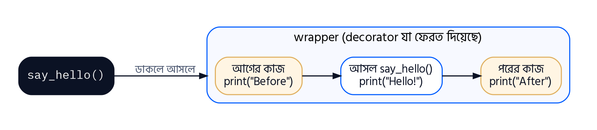

অধ্যায় ৬
Python Iterator, Generator and Decorators
প্রথম অধ্যায় থেকেই তুমি for x in something: লিখছ। কখনো ভেবেছ, for loop কীভাবে জানে list থেকে পরের উপাদানটা কোনটা, আর কখন থামতে হবে? এই অধ্যায়ে সেই রহস্য খুলব — iterator। তারপর দেখব generator, যেটা দিয়ে লাখ লাখ data নিয়ে কাজ করা যায় memory প্রায় খরচ না করেই। শেষে decorator, যেটা দিয়ে কোনো function-এর কোড না ছুঁয়েই তার আচরণ বদলানো যায়।
অধ্যায় ৫-এ @abstractmethod লিখেছিলে, আর @property-র কথা শুনেছিলে। ওগুলো ছিল decorator। তাই এই অধ্যায় শেষে তুমি শুধু নতুন জিনিস শিখবে না, আগে যা না বুঝে ব্যবহার করেছ সেটাও বুঝে যাবে। আর এখানেও সব কিছুর মূলে আছে class, object আর method — বিশেষ করে __iter__ আর __next__ নামের দুটো বিশেষ method।
6.1 Iterator, Generator ও Decorator কী?
তিনটা বিষয় প্রথমে এক নজরে চিনে নিই। প্রতিটা নিয়ে বিস্তারিত আলোচনা পরের section-গুলোতে।
| বিষয় | বাস্তব উদাহরণ | এক কথায় |
|---|---|---|
| Iterator | TV remote-এর channel-up বাটন: প্রতিবার চাপলে পরের channel, শেষ channel-এর পর আর এগোয় না | "পরেরটা দাও" |
| Generator | চায়ের দোকানদার অর্ডার পেলে তবেই এক কাপ চা বানান, সকালে একশো কাপ বানিয়ে রাখেন না | "দরকার হলে বানাও" |
| Decorator | উপহারের বাক্সে র্যাপিং পেপার: ভেতরের উপহার একই থাকে, বাইরে থেকে নতুন রূপ যোগ হয় | "মোড়ক লাগাও" |
6.2 Iterator-এর কার্যপদ্ধতি
Iterable বনাম Iterator
দুটো শব্দ প্রায় একই রকম শোনায়, কিন্তু অর্থ আলাদা। এই পার্থক্যটা পরিষ্কার না হলে পুরো section গুলিয়ে যাবে।
- Iterable হলো এমন জিনিস, যার উপর loop চালানো যায় — list, string, tuple, range, dictionary। Iterable নিজে মনে রাখে না কোন পর্যন্ত পড়া হয়েছে।
- Iterator হলো সেই object, যেটা iterable-এর উপর দিয়ে এক পা এক পা করে হাঁটে এবং মনে রাখে এখন কোথায় আছে।
iter() আর next()
যেকোনো iterable থেকে iter() function দিয়ে একটা iterator বানানো যায়। তারপর next() দিয়ে একটা একটা করে উপাদান নেওয়া যায়।
উদাহরণ 6.1হাতে হাতে Iteration
সমস্যা: একটা list থেকে iterator বানিয়ে next() দিয়ে উপাদানগুলো নাও।
1marks = [78, 85, 92]
2it = iter(marks)
3print(type(it))
4print(next(it))
5print(next(it))
6print(next(it))
7print(next(it))
<class 'list_iterator'> 78 85 92 Traceback (most recent call last): ... StopIteration
লাইন-বাই-লাইন ব্যাখ্যা
| 1 | marks = [78, 85, 92] | marks একটা iterable। |
| 2 | it = iter(marks) | iter() দিয়ে marks-এর জন্য একটা iterator তৈরি হলো। বুকমার্ক রাখা হলো প্রথম পাতার আগে। |
| 3 | print(type(it)) | type দেখাচ্ছে list_iterator — একটা আলাদা object, list নয়। |
| 4–6 | print(next(it)) print(next(it)) print(next(it)) | প্রতিবার next() একটা উপাদান দেয় আর বুকমার্ক এক ঘর এগিয়ে নেয়। |
| 7 | print(next(it)) | আর কোনো উপাদান নেই। iterator তখন StopIteration তোলে — এটা iterator-এর ভাষায় "শেষ, আর কিছু নেই" বলার উপায়। |

try-except: সংক্ষেপে
StopIteration একটা exception — program চলার সময় ঘটা একটা অস্বাভাবিক অবস্থা। কোনো exception ঘটলে program থেমে যাওয়া ঠেকাতে Python-এ আছে try-except। শুধু এই অধ্যায়ের জন্য যতটুকু লাগে:
Syntax
try:
# যে কোডে exception ঘটতে পারে
except ExceptionName:
# সেই exception ঘটলে এখানে আসবে, program থামবে না
for loop আসলে কী করে
এবার বড় রহস্যের সমাধান। তুমি যখন লেখো for m in marks:, Python ভেতরে ভেতরে ঠিক এই কাজগুলো করে:
উদাহরণ 6.2for loop-এর ভেতরের চেহারা
সমস্যা: একই কাজ একবার for loop দিয়ে আর একবার iter(), next() ও try-except দিয়ে করে দেখাও যে দুটো আসলে একই।
1marks = [78, 85, 92]
2
3for m in marks:
4 print("for loop:", m)
5
6it = iter(marks)
7while True:
8 try:
9 m = next(it)
10 except StopIteration:
11 break
12 print("manual :", m)
for loop: 78 for loop: 85 for loop: 92 manual : 78 manual : 85 manual : 92
লাইন-বাই-লাইন ব্যাখ্যা
| 3–4 | for m in marks:
print("for loop:", m) | চেনা for loop। |
| 6 | it = iter(marks) | for loop-এর প্রথম গোপন কাজ: iterable থেকে iterator বানানো। |
| 7 | while True: | while True মানে চিরকাল ঘোরো — থামবে শুধু break পেলে। |
| 8–9 | try:
m = next(it) | প্রতিবার next() দিয়ে পরের উপাদান নেওয়া। |
| 10–11 | except StopIteration:
break | StopIteration এলে loop ভেঙে বেরিয়ে যাওয়া। এজন্যই for loop কখনো StopIteration error দেখায় না — নিজেই ধরে ফেলে। |
| 12 | print("manual :", m) | loop-এর body। |
নিজের Iterator: __iter__() ও __next__()
কোনো class-এর object-কে iterator বানাতে দুটো বিশেষ method লিখতে হয়। এদের বলে iterator protocol:
| Method | কাজ | কে ডাকে |
|---|---|---|
| __iter__(self) | iterator object ফেরত দেয়। নিজেই iterator হলে return self | iter() function; for loop শুরুতে |
| __next__(self) | পরের মান ফেরত দেয়; মান শেষ হলে raise StopIteration | next() function; for loop প্রতি ধাপে |
উদাহরণ 6.3Countdown Iterator
সমস্যা: একটা Countdown class বানাও, যার object for loop-এ দিলে নির্দিষ্ট সংখ্যা থেকে 1 পর্যন্ত উল্টো গুনবে।
1class Countdown:
2 def __init__(self, start):
3 self.current = start
4
5 def __iter__(self):
6 return self
7
8 def __next__(self):
9 if self.current <= 0:
10 raise StopIteration
11 value = self.current
12 self.current -= 1
13 return value
14
15for n in Countdown(5):
16 print(n, end=" ")
17print("Go!")
18
19c = Countdown(2)
20print(next(c))
21print(next(c))
5 4 3 2 1 Go! 2 1
লাইন-বাই-লাইন ব্যাখ্যা
| 2–3 | def __init__(self, start):
self.current = start | iterator-কে মনে রাখতে হবে এখন কোথায় আছে। এই "বুকমার্ক"-ই self.current। |
| 5–6 | def __iter__(self):
return self | __iter__() নিজেকেই ফেরত দিচ্ছে, কারণ এই object নিজেই iterator। |
| 8–10 | def __next__(self):
if self.current <= 0:
raise StopIteration | মান শেষ হলে raise StopIteration। raise মানে ইচ্ছা করে একটা exception তোলা — এখানে for loop-কে জানানো যে কাজ শেষ। |
| 11–13 | value = self.current
self.current -= 1
return value | বর্তমান মান রেখে দিয়ে বুকমার্ক এক ঘর পিছিয়ে দিলাম, তারপর রেখে দেওয়া মান ফেরত দিলাম। |
| 15–17 | for n in Countdown(5):
print(n, end=" ")
print("Go!") | for loop আমাদের class-এর সাথে ঠিক list-এর মতোই কাজ করছে, কারণ Countdown iterator protocol মেনে চলে। |
| 19–21 | c = Countdown(2) print(next(c)) print(next(c)) | next() দিয়ে হাতে হাতেও চালানো যায়। |
6.3 Generator-এর কার্যপদ্ধতি
Countdown iterator কাজ করে, কিন্তু একটা সাধারণ গণনার জন্য class, __init__, __iter__, __next__, raise StopIteration — অনেক কিছু লিখতে হলো। Generator এই পুরো কাজ একটা সাধারণ function দিয়েই করে দেয়। গোপন অস্ত্রটা হলো yield keyword।
yield: থামো, মান দাও, অপেক্ষা করো
সাধারণ function-এ return পৌঁছালে function শেষ, সব local variable মুছে যায়। yield-এ পৌঁছালে function একটা মান দেয় এবং ঠিক ওই জায়গায় থেমে থাকে, সব variable সহ। পরের বার next() ডাকলে যেখানে থেমেছিল, ঠিক সেখান থেকে আবার চলা শুরু করে।
উদাহরণ 6.4Generator-এর থামা ও চলা দেখা
সমস্যা: একটা generator function-এ প্রতিটা yield-এর আগে-পরে print রেখে দেখো কখন কোন লাইন চলে।
1def simple_gen():
2 print(" [started]")
3 yield 1
4 print(" [resumed after 1]")
5 yield 2
6 print(" [resumed after 2]")
7 yield 3
8 print(" [finished]")
9
10g = simple_gen()
11print("Generator created:", type(g))
12print("Got:", next(g))
13print("Got:", next(g))
14print("Got:", next(g))
15for x in g:
16 print("Never printed")
Generator created: <class 'generator'> [started] Got: 1 [resumed after 1] Got: 2 [resumed after 2] Got: 3 [finished]
লাইন-বাই-লাইন ব্যাখ্যা
| 1–8 | def simple_gen():
print(" [started]")
yield 1
print(" [resumed after 1]")
yield 2
print(" [resumed after 2]")
yield 3
print(" [finished]") | function-এর ভেতরে yield আছে বলেই এটা আর সাধারণ function নয়, generator function। |
| 10–11 | g = simple_gen()
print("Generator created:", type(g)) | সবচেয়ে চমকপ্রদ বিষয়: simple_gen() ডাকার পরও "[started]" print হয়নি! Generator function ডাকলে body চলে না, শুধু একটা generator object তৈরি হয়। |
| 12 | print("Got:", next(g)) | প্রথম next(): body শুরু হলো, "[started]" print করে yield 1-এ থামল, 1 ফেরত দিল। |
| 13 | print("Got:", next(g)) | দ্বিতীয় next(): ঠিক yield 1-এর পরের লাইন থেকে চলা শুরু, yield 2-এ থামল। |
| 14 | print("Got:", next(g)) | তৃতীয় next(): একইভাবে yield 3 পর্যন্ত। |
| 15–16 | for x in g:
print("Never printed") | for loop আরেকটা next() ডাকল: "[finished]" print হলো, function-এর শেষে পৌঁছাল, তাই নিজে থেকেই StopIteration — for loop চুপচাপ থেমে গেল। কোনো মান আসেনি বলে body একবারও চলেনি। |
লক্ষ করো, আমরা কোথাও __iter__, __next__ বা raise StopIteration লিখিনি। Python generator-এর জন্য এগুলো নিজেই বানিয়ে দেয়। Generator আসলে একটা iterator — শুধু অনেক কম কোডে লেখা।
Memory Efficiency: Generator কেন দরকার
ধরো 1 থেকে দশ লাখ পর্যন্ত সংখ্যার বর্গের যোগফল চাই। সব বর্গ একটা list-এ রেখে যোগ করা যায়, আবার generator দিয়ে একটা একটা করে তৈরি করেও যোগ করা যায়। ফল একই, কিন্তু memory খরচ আকাশ-পাতাল।
1import sys
2
3squares_list = [n * n for n in range(1000000)]
4squares_gen = (n * n for n in range(1000000))
5
6print("List size :", sys.getsizeof(squares_list), "bytes")
7print("Generator size:", sys.getsizeof(squares_gen), "bytes")
8print(sum(squares_list) == sum(squares_gen))
List size : 8448728 bytes Generator size: 200 bytes True
লাইন-বাই-লাইন ব্যাখ্যা
| 1 | import sys | sys module-এর getsizeof() একটা object memory-তে কত byte জায়গা নিচ্ছে সেটা বলে। |
| 3 | squares_list = [n * n for n in range(1000000)] | Square bracket — list comprehension। দশ লাখ বর্গ এখনই হিসাব করে memory-তে জমা হলো। |
| 4 | squares_gen = (n * n for n in range(1000000)) | গোল bracket — generator expression। দেখতে প্রায় একই, কিন্তু কিছুই হিসাব হয়নি, শুধু একটা "রেসিপি" তৈরি হয়েছে। |
| 6–7 | print("List size :", sys.getsizeof(squares_list), "bytes")
print("Generator size:", sys.getsizeof(squares_gen), "bytes") | List প্রায় 8 MB জায়গা নিয়েছে; generator মাত্র দুইশো byte-এর মতো, আর দশ লাখের জায়গায় একশো কোটি হলেও এই সংখ্যা বাড়বে না। (সঠিক byte সংখ্যা Python version ভেদে সামান্য আলাদা হতে পারে।) |
| 8 | print(sum(squares_list) == sum(squares_gen)) | দুটোর যোগফল একই — ফলে কোনো পার্থক্য নেই, পার্থক্য শুধু memory-তে। |
একটি ব্যবহারিক Generator: Fibonacci
উদাহরণ 6.5Fibonacci Generator
সমস্যা: Fibonacci ধারার (0, 1, 1, 2, 3, 5, ...) প্রথম n টি সংখ্যা দেওয়ার generator লেখো।
1def fibonacci(n):
2 a, b = 0, 1
3 for _ in range(n):
4 yield a
5 a, b = b, a + b
6
7print(list(fibonacci(10)))
8
9for num in fibonacci(15):
10 if num > 50:
11 break
12 print(num, end=" ")
13print()
[0, 1, 1, 2, 3, 5, 8, 13, 21, 34] 0 1 1 2 3 5 8 13 21 34
লাইন-বাই-লাইন ব্যাখ্যা
| 2 | a, b = 0, 1 | প্রথম দুটো সংখ্যা। এক লাইনে দুটো variable-এ মান (multiple assignment)। |
| 3 | for _ in range(n): | _ একটা প্রচলিত variable নাম, মানে "এই মানটা আমার দরকার নেই, শুধু n বার ঘোরাও"। |
| 4–5 | yield a
a, b = b, a + b | বর্তমান সংখ্যা yield করে থামে; আবার চালু হলে পরের জোড়া হিসাব করে। |
| 7 | print(list(fibonacci(10))) | list() পুরো generator চালিয়ে সব মান একটা list-এ নিল। |
| 9–12 | for num in fibonacci(15):
if num > 50:
break
print(num, end=" ") | দরকার মতো থামা যায়। 50-এর বড় সংখ্যা আসতেই break — বাকি সংখ্যাগুলো কখনো তৈরিই হয়নি। এটাই generator-এর "lazy" (অলস, দরকার না হলে কাজ করে না) স্বভাব। |
তুলনা
| বিষয় | সাধারণ Function | Generator Function |
|---|---|---|
| মান ফেরত | return — একবার, তারপর শেষ | yield — বারবার, প্রতিবার থেমে থাকে |
| ডাকলে কী পাওয়া যায় | সরাসরি ফলাফল | একটা generator object |
| Local variable | return-এর পর মুছে যায় | yield-এর পরও মনে থাকে |
| Memory | সব ফল একসাথে রাখতে হলে বেশি লাগে | একবারে একটা মান, তাই খুব কম |
| বিষয় | Iterator (class দিয়ে) | Generator |
|---|---|---|
| তৈরি | __iter__() ও __next__() সহ class লিখে | yield সহ function লিখে বা ( ) expression দিয়ে |
| কোডের পরিমাণ | বেশি | অনেক কম |
| StopIteration | নিজে raise করতে হয় | function শেষ হলে নিজে থেকে হয় |
| State (অবস্থা) মনে রাখা | self-এর attribute-এ নিজে রাখতে হয় | local variable-এ নিজে থেকেই থাকে |
| কখন ভালো | জটিল আচরণ, অতিরিক্ত method লাগলে | সাধারণ ক্রম তৈরিতে — বেশিরভাগ ক্ষেত্রে |
6.4 Decorator-এর কার্যপদ্ধতি
Decorator হলো এই বইয়ের সবচেয়ে "জাদুকরী" দেখতে বিষয়, কিন্তু আসলে এর ভেতরে কোনো জাদু নেই। এটা function-এর কয়েকটা সাধারণ ধারণার সমন্বয় মাত্র। তাই সরাসরি @ চিহ্নে না গিয়ে আমরা পাঁচ ধাপে এগোব। প্রতিটা ধাপ আগের ধাপের উপর দাঁড়িয়ে।
ধাপ ১: Function একটা Object
Python-এ সবকিছুই object — function-ও। তাই function-কে variable-এ রাখা যায়, অন্য নাম দেওয়া যায়।
1def greet():
2 return "Hello!"
3
4say = greet
5print(say())
6print(type(greet))
Hello! <class 'function'>
লাইন-বাই-লাইন ব্যাখ্যা
| 4 | say = greet | bracket ছাড়া greet মানে function-টা নিজে, তাকে ডাকা নয়। say এখন একই function-এর আরেকটা নাম। |
| 5 | print(say()) | say() ডাকলে আসলে greet-ই চলে। |
| 6 | print(type(greet)) | function-ও একটা class-এর object। |
ধাপ ২: Function-কে Argument হিসেবে পাঠানো
1def shout(text):
2 return text.upper() + "!"
3
4def whisper(text):
5 return text.lower() + "..."
6
7def speak(style, message):
8 print(style(message))
9
10speak(shout, "Hello Students")
11speak(whisper, "Hello Students")
HELLO STUDENTS! hello students...
লাইন-বাই-লাইন ব্যাখ্যা
| 7–8 | def speak(style, message):
print(style(message)) | speak() এর প্রথম parameter style একটা function। speak জানে না কোন function আসবে, শুধু ডেকে দেয়। |
| 10–11 | speak(shout, "Hello Students") speak(whisper, "Hello Students") | shout আর whisper bracket ছাড়া পাঠানো হলো — function নিজেই argument। |
ধাপ ৩: Function-এর ভেতরে Function
1def outer():
2 print("Outer is running")
3
4 def inner():
5 print("Inner is running")
6
7 inner()
8
9outer()
Outer is running Inner is running
লাইন-বাই-লাইন ব্যাখ্যা
| 4–5 | def inner():
print("Inner is running") | outer-এর ভেতরে inner নামে আরেকটা function তৈরি। এটা outer-এর local — বাইরে থেকে inner() ডাকা যাবে না। |
| 7 | inner() | outer নিজেই inner-কে ডাকছে। |
ধাপ ৪: Function থেকে Function Return করা
1def make_multiplier(n):
2 def multiply(x):
3 return x * n
4 return multiply
5
6double = make_multiplier(2)
7triple = make_multiplier(3)
8print(double(10))
9print(triple(10))
20 30
লাইন-বাই-লাইন ব্যাখ্যা
| 2–3 | def multiply(x):
return x * n | ভেতরের function, যেটা বাইরের function-এর n ব্যবহার করছে। |
| 4 | return multiply | multiply-কে ডাকা হচ্ছে না (bracket নেই), function-টাই ফেরত দেওয়া হচ্ছে। |
| 6–7 | double = make_multiplier(2) triple = make_multiplier(3) | double আর triple দুটো আলাদা function, একই কারখানা থেকে তৈরি। make_multiplier শেষ হয়ে গেলেও double মনে রেখেছে n = 2। ভেতরের function বাইরের variable মনে রাখার এই ক্ষমতাকে বলে closure। |
ধাপ ৫: সব মিলিয়ে — Decorator
এবার ধাপ ২ (function argument হিসেবে নেওয়া), ধাপ ৩ (ভেতরে নতুন function) আর ধাপ ৪ (সেটা return করা) একসাথে করি:
উদাহরণ 6.6হাতে বানানো Decorator
সমস্যা: একটা decorator লেখো, যেটা যেকোনো function চলার আগে আর পরে একটা করে বার্তা দেখায়। প্রথমে @ ছাড়া, হাতে হাতে প্রয়োগ করো।
1def my_decorator(func):
2 def wrapper():
3 print("Before the function")
4 func()
5 print("After the function")
6 return wrapper
7
8def say_hello():
9 print("Hello!")
10
11say_hello = my_decorator(say_hello)
12say_hello()
Before the function Hello! After the function
লাইন-বাই-লাইন ব্যাখ্যা
| 1 | def my_decorator(func): | decorator একটা function, যেটা আরেকটা function (func) নেয় — ধাপ ২। |
| 2–5 | def wrapper():
print("Before the function")
func()
print("After the function") | ভেতরে wrapper নামে নতুন function — ধাপ ৩। এটা আগে একটা কাজ করে, তারপর আসল func ডাকে, তারপর আরেকটা কাজ। closure-এর কারণে wrapper মনে রাখে func কোনটা। |
| 6 | return wrapper | wrapper ফেরত দেওয়া হলো — ধাপ ৪। |
| 11 | say_hello = my_decorator(say_hello) | আসল কৌশল। say_hello-কে decorator-এ পাঠিয়ে যে wrapper ফেরত এল, সেটাকেই আবার say_hello নামে রেখে দিলাম। say_hello নামটা এখন wrapper-কে বোঝায়। |
| 12 | say_hello() | say_hello() ডাকলে আসলে wrapper চলে, যেটা ভেতরে আসল say_hello ডাকে। আসল function-এর একটা লাইনও বদলাইনি। |

@ চিহ্ন: একই কাজ, সংক্ষেপে
say_hello = my_decorator(say_hello) লাইনটা প্রতিবার লেখা ঝামেলার, আর function-এর নিচে থাকায় চোখেও পড়ে না। তাই Python একটা সংক্ষিপ্ত লেখা দিয়েছে: function-এর ঠিক উপরে @my_decorator।
Syntax
@my_decorator
def say_hello():
print("Hello!")
# Python ভেতরে ঠিক এটা করে:
# say_hello = my_decorator(say_hello)
@ কোনো নতুন ক্ষমতা নয়, শুধু সংক্ষিপ্ত লেখা। এই কথাটা বুঝলেই decorator বোঝা হয়ে গেল।
Argument আর Return Value সহ Decorator
উপরের wrapper() কোনো argument নেয় না। কিন্তু যে function-কে decorate করছি সে যদি argument নেয়, বা কিছু return করে? তখন wrapper-কে যেকোনো argument গ্রহণ করতে হবে এবং ফলটা ফেরত দিতে হবে। এর জন্য *args আর **kwargs:
*args— যত খুশি সাধারণ (positional) argument, একসাথে।**kwargs— যত খুশি নামসহ (keyword) argument, যেমনsemester=3।- একসাথে
wrapper(*args, **kwargs)মানে "যা-ই আসুক, সব নাও", আরfunc(*args, **kwargs)মানে "যা পেয়েছ, হুবহু আসল function-কে দিয়ে দাও"।
উদাহরণ 6.7Logging Decorator
সমস্যা: একটা decorator লেখো, যেটা যেকোনো function ডাকার সময় তার নাম, argument আর ফলাফল দেখাবে।
1def log_call(func):
2 def wrapper(*args, **kwargs):
3 print(f"Calling {func.__name__} with {args} {kwargs}")
4 result = func(*args, **kwargs)
5 print(f"{func.__name__} returned {result}")
6 return result
7 return wrapper
8
9@log_call
10def add(a, b):
11 return a + b
12
13@log_call
14def gpa_to_percent(gpa, scale=4.0):
15 return round(gpa / scale * 100, 1)
16
17total = add(15, 27)
18p = gpa_to_percent(3.6, scale=4.0)
19print("Final values:", total, p)
Calling add with (15, 27) {}
add returned 42
Calling gpa_to_percent with (3.6,) {'scale': 4.0}
gpa_to_percent returned 90.0
Final values: 42 90.0লাইন-বাই-লাইন ব্যাখ্যা
| 2 | def wrapper(*args, **kwargs): | wrapper যেকোনো সংখ্যক argument নিতে পারে, তাই এই decorator যেকোনো function-এ লাগানো যাবে। |
| 3 | print(f"Calling {func.__name__} with {args} {kwargs}") | func.__name__ হলো function-এর নাম। args একটা tuple (গোল bracket-এর list), kwargs একটা dictionary — দুটোই Python-এর built-in collection। |
| 4–6 | result = func(*args, **kwargs)
print(f"{func.__name__} returned {result}")
return result | আসল function চালিয়ে ফল রেখে দেওয়া, তারপর ফেরত দেওয়া। এই return ভুলে গেলে decorate করা প্রতিটা function None দেবে। |
| 17–18 | total = add(15, 27) p = gpa_to_percent(3.6, scale=4.0) | add-এ দুটো positional argument, gpa_to_percent-এ একটা positional আর একটা keyword — একই decorator দুটোই সামলেছে। |
পরিচিত Decorator: @property এবং @abstractmethod
অধ্যায় ৫-এ দুটো decorator না বুঝেই ব্যবহার করেছিলে। এখন বুঝতে পারছ — @abstractmethod আসলে area = abstractmethod(area), যেটা method-টাকে "abstract" হিসেবে চিহ্নিত করে দেয়। আর @property দিয়ে getter/setter-কে সাধারণ attribute-এর মতো ব্যবহার করা যায়। কথা দিয়েছিলাম, তাই দেখাচ্ছি:
উদাহরণ 6.8@property দিয়ে Encapsulation
সমস্যা: অধ্যায় ৫-এর get_cgpa()/set_cgpa()-কে @property দিয়ে আবার লেখো, যাতে s.cgpa লিখেই পড়া আর বদলানো যায়, কিন্তু যাচাই বজায় থাকে।
1class Student:
2 def __init__(self, name, cgpa):
3 self.name = name
4 self.__cgpa = 0.0
5 self.cgpa = cgpa
6
7 @property
8 def cgpa(self):
9 return self.__cgpa
10
11 @cgpa.setter
12 def cgpa(self, value):
13 if 0.0 <= value <= 4.0:
14 self.__cgpa = value
15 else:
16 print(f"Invalid CGPA {value}")
17
18s = Student("Sumaiya", 3.80)
19print(s.cgpa)
20s.cgpa = 4.75
21s.cgpa = 3.95
22print(s.cgpa)
3.8 Invalid CGPA 4.75 3.95
লাইন-বাই-লাইন ব্যাখ্যা
| 7–9 | @property
def cgpa(self):
return self.__cgpa | @property cgpa method-কে একটা getter-এ পরিণত করল। এখন s.cgpa লিখলে (bracket ছাড়া) এই method চলে। |
| 11–16 | @cgpa.setter
def cgpa(self, value):
if 0.0 <= value <= 4.0:
self.__cgpa = value
else:
print(f"Invalid CGPA {value}") | @cgpa.setter একই নামের দ্বিতীয় method-কে setter বানাল। s.cgpa = মান লিখলে এটা চলে, যাচাইসহ। |
| 5 | self.cgpa = cgpa | constructor-এও self.cgpa = cgpa লেখায় setter চলছে — যাচাই এখানেও খাটে। |
| 19–22 | print(s.cgpa) s.cgpa = 4.75 s.cgpa = 3.95 print(s.cgpa) | ব্যবহারকারীর কাছে এটা সাধারণ attribute-এর মতো দেখায়, কিন্তু ভেতরে Encapsulation-এর পুরো সুরক্ষা আছে। 4.75 প্রত্যাখ্যাত, 3.95 গৃহীত। |
6.5 Iterator, Generator ও Decorator দিয়ে Program
Syllabus 6.5-এ iterator, generator ও decorator ব্যবহার করে program লিখতে বলা হয়েছে। এই অধ্যায়ের তিনটা উদাহরণই পরীক্ষার জন্য আদর্শ উত্তর: Iterator — উদাহরণ 6.3 (Countdown class, __iter__ ও __next__ সহ); Generator — উদাহরণ 6.5 (Fibonacci, yield সহ); Decorator — উদাহরণ 6.7 (Logging decorator, @ সহ)। নিচের অনুশীলনগুলো নিজে করলে এই section-এর প্রস্তুতি সম্পূর্ণ হবে।
অধ্যায়ের সারসংক্ষেপ
| বিষয় | মূল কথা |
|---|---|
| Iterable | যার উপর loop চলে (list, string, range); iter() দিয়ে iterator পাওয়া যায়। |
| Iterator | একটা একটা করে মান দেয়, অবস্থান মনে রাখে; next() দিয়ে মান; শেষে StopIteration; একবারই ব্যবহারযোগ্য। |
| for loop | ভেতরে iter() + বারবার next() + StopIteration ধরে থামা। |
| Iterator protocol | __iter__() (iterator ফেরত দেয়) ও __next__() (পরের মান বা StopIteration)। |
| Generator | yield সহ function; ডাকলে generator object; প্রতি next()-এ পরের yield পর্যন্ত চলে থামে; memory সাশ্রয়ী। |
| Generator expression | ( ) দিয়ে লেখা, list comprehension-এর মতো কিন্তু lazy। |
| Decorator | Function নেয়, wrapper ফেরত দেয়; @deco = f = deco(f); *args, **kwargs দিয়ে সব function-এ খাটে। |
| Closure | ভেতরের function বাইরের function-এর variable মনে রাখে। |
অনুশীলনী · অধ্যায় ৬ (বোর্ড প্রশ্ন ও উত্তর)
অনুশীলনী ও বোর্ড প্রশ্নের উত্তর লক করা
এই অংশ শুধু বইয়ের PDF ক্রেতাদের জন্য। PDF কিনলে একটা আনলক কোড পাবে — কোডটা এখানে দিলেই পুরো বইয়ের সব অনুশীলনী আর বোর্ড প্রশ্নের উত্তর খুলে যাবে, প্রতিবার আর দিতে হবে না।
PDF কিনতে Facebook-এ মেসেজ দাও: facebook.com/kazitauhidrana ↗
এই অধ্যায় কেমন লাগল?
তোমার মতামত সরাসরি লেখকের কাছে যাবে। ভুল পেলে কোন section-এ, সেটাও লিখে দিও।